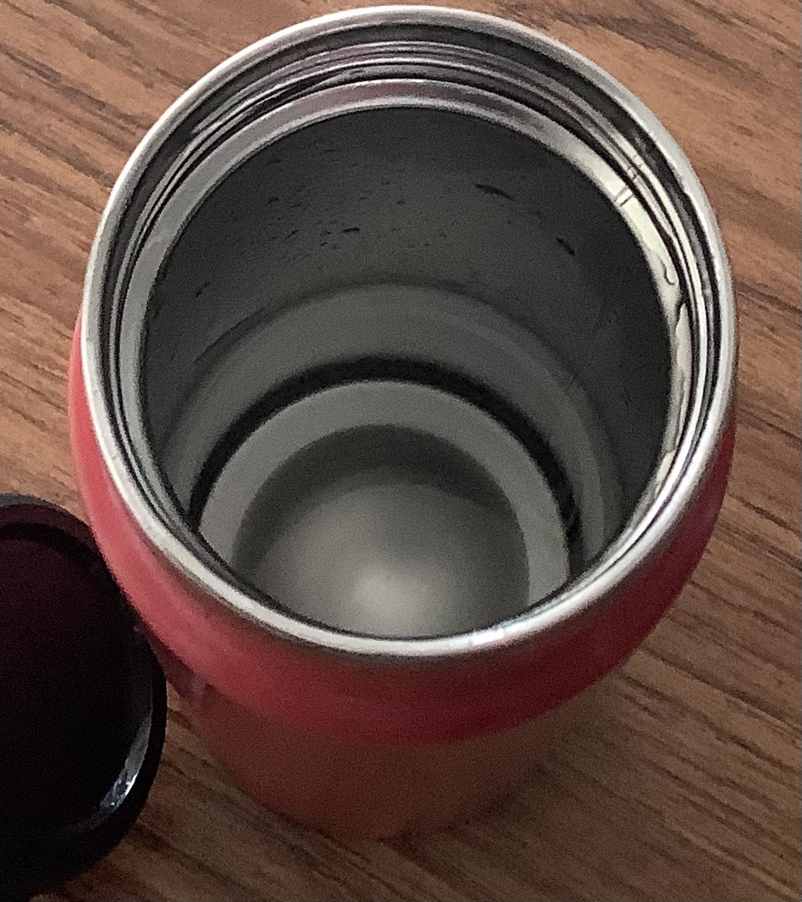
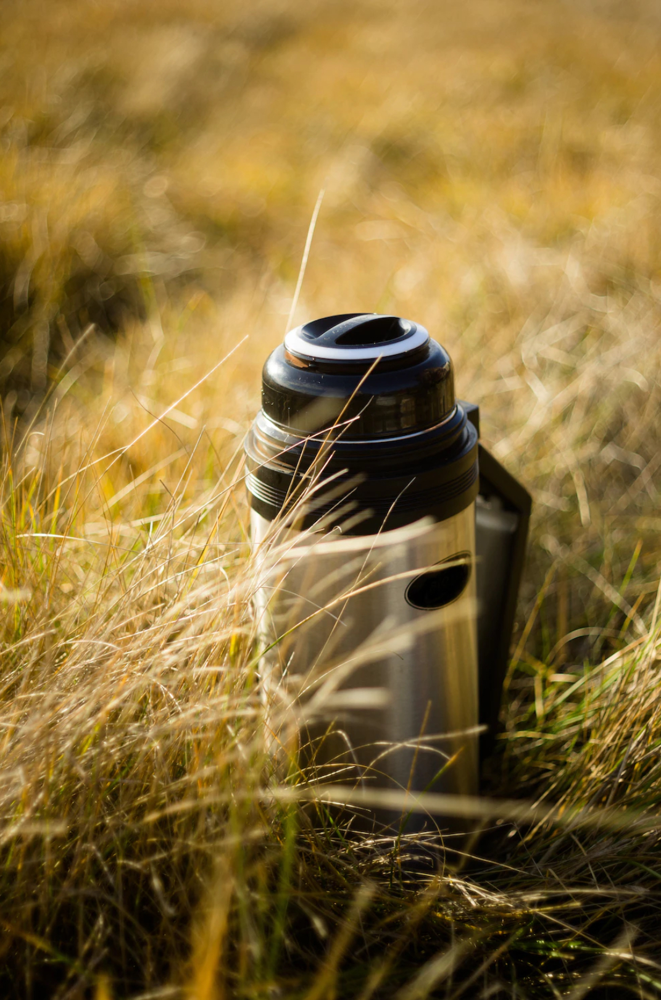
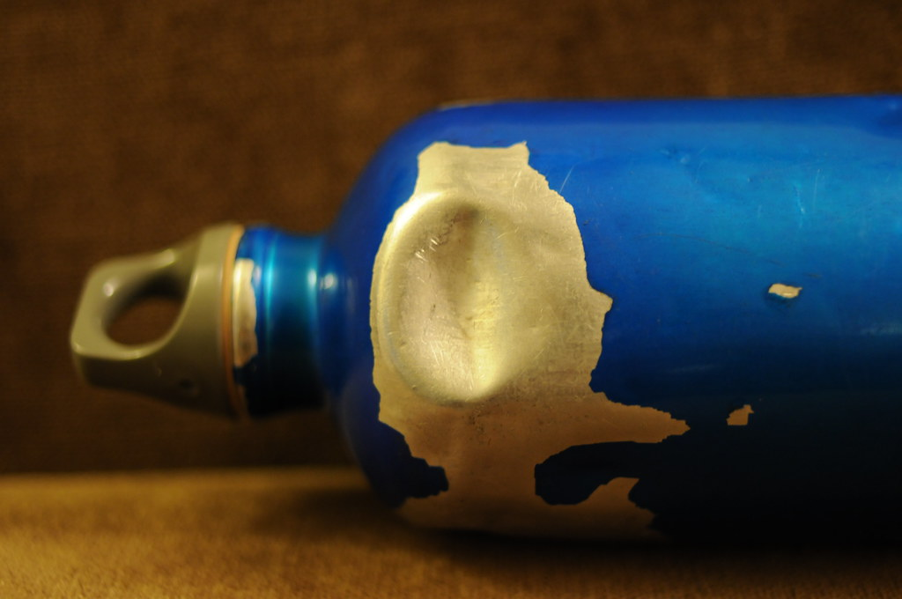

You've been here before.
|
You've been here before. |
index | Levels | Level 0 | Level ! | Level "The End" | Entities | Entity 3 | Entity 8 | Entity 10 | Objects | Object 1 | Object 2 | Object 48 |
Object 1, also known as Almond Water, is a set of metal thermoses containing a clear liquid. It is found on most levels of the Backrooms and is highly sought after by wanderers for nutrition and trade.
Almond Water thermoses are usually 1’ tall and filled to the brim. They can be found individually or in small groups and are sometimes worn or dented. While generally safe to drink, caution is advised on unexplored levels or if the bottle is not full.
Two thermoses of Almond Water found in a box on Level 3.
Almond Water provides nutritional value equivalent to a 600-calorie meal per bottle. It contains proteins, fats, sodium, and vitamins. Variants may have additional effects: Grey (slightly sweet), Green (caffeinated), Red (bitter, medicinal), Blue (induces drowsiness and psychological stability).
Clear liquid inside a half-drinken thermos.
A bottle of Almond Water inside the grass on Level 10.
Damaged bottle of Almond Water.
Do:
Don’t: